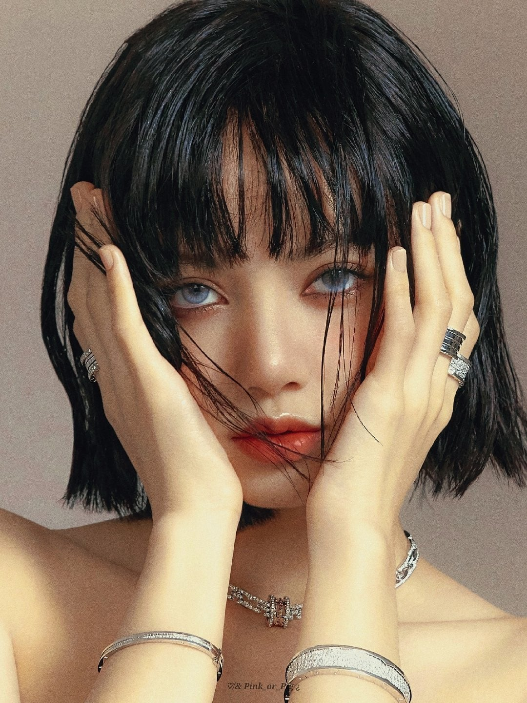

LALALISA

Contact
Address:
30 Wall Street, New York City, USA
Phone:
+44
|0|20 7666 8555
Email:
lisamoniban1997@gmail.com
Languages
Thai - C2
Korea - A1
English - A2
Hobbies
- Writing
- Singing
- Dancing
- Composing
Summary
Lalisa Manobal, better known by her artist Lisa, is a Thai rapper, singer, songwriter and dancer. She is the youngest member of the Korean girl group Blackpink under YG Entertainment. Lisa made her solo debut with the single album Lalisa in September 2021, with the title disc of the same name
Skill Highlights
- Professional Dancer
- Rapper
- Professional Composer
Experience
On August 8, 2016, officially debuted with the game as one of four members of the Korean girl group Blackpink. Blackpink debuted with their debut single album Square One and the lead singles "Whistle" and "Boombayah". "Whistle" achieved the perfect "all-kill", topping all Korean music charts as soon as it debuted. As of October 2020, the group has released two studio albums, Blackpink in Your Area and The Album, three mini albums Blackpink, Square Up and Kill This Love, and two single albums, Square One and Square. Two.
Educaiton
In 2010, I auditioned to become a trainee of YG Entertainment in Thailand. Since childhood, i have been interested in the Korean entertainment industry, i admire two groups Big Bang and 2NE1 and hopes to one day become an idol. Out of 4,000 applicants, i was the only one to pass, which prompted then-executive director Yang Hyun-suk to offer me the chance to become a YG Entertainment trainee. I also impressed one of the judges, Danny Im of 1TYM at the audition, who then complimented her on-stage confidence and off-stage attitude.
Certifications
Me as MAC Cosmetics' first female K-pop idol appointed as a global brand ambassador brought in $1.83 million in MIV®[d], with MAC's announcement post already generated $506k in MIV® - representing their position as the top brand in 2020 and making them one of the top co-working beauty brands of the year. My announcement post on Instagram as global ambassador for MAC Cosmetics has received over 5.8 million likes and 74,000 comments. My partnerships have been noted as very genuine as i frequently showcases the same brands on my social media channels. The success of my endorsements and partnerships is partly due to this authenticity. Because of me influence and marketing potential, I serves as an example of a changing promotional strategy in the fashion and makeup industry.[84]